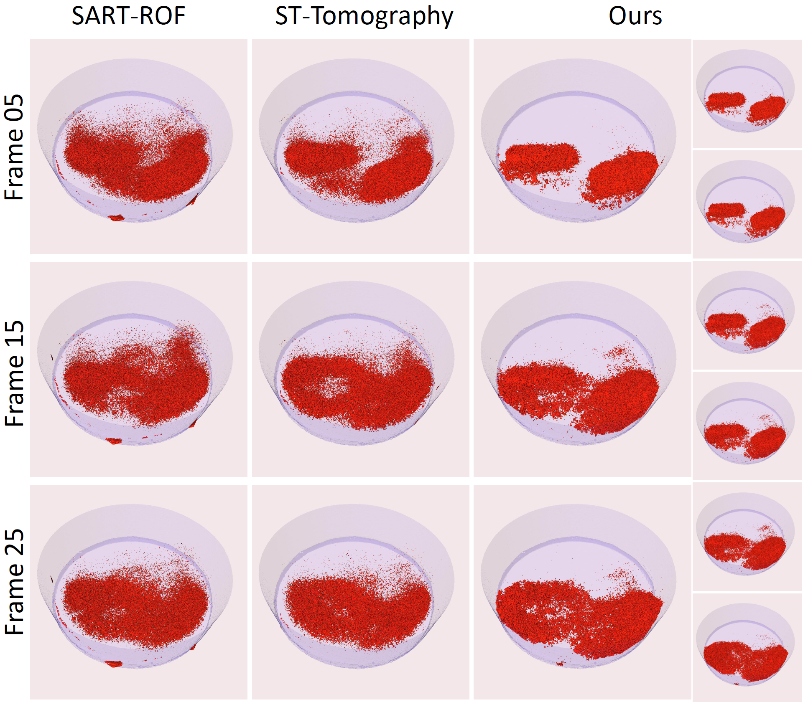

We introduce a CT reconstruction method for objects that undergo rapid deformation during the scan.
Shown here is a copper foam crumpling under a compressive force during the scan. The whole complex
animation is reconstructed using only 192 projection images that all correspond to different deformation
states of the foam.
Abstract
Computed tomography has emerged as the method of choice for scanning
complex shapes as well as interior structures of stationary objects. Recent
progress has also allowed the use of CT for analyzing deforming objects and
dynamic phenomena, although the deformations have been constrained to
be either slow or periodic motions.
In this work we improve the tomographic reconstruction of time-varying
geometries undergoing faster, non-periodic deformations. Our method uses
a warp-and-project approach that allows us to introduce an essentially
continuous time axis where consistency of the reconstructed shape with the
projection images is enforced for the specific time and deformation state at
which the image was captured. The method uses an efficient, time-adaptive
solver that yields both the moving geometry as well as the deformation field.
We validate our method with extensive experiments using both synthetic
and real data from a range of different application scenarios.
Main results
Hydro-gel balls
3D rendering of water absorption by Hydro-gel balls, with a slice comparison of the ST-tomography approach (lower left) and our method (upper
right).
Compression of the copper foam
(a-b): The height (in mm) of the copper foam before and after the
compression process, respectively. The total displacement during the compression
is 3.77mm, uniformly distributed over 192 scans. 60 projections
are obtained for each scan. (c): the states of the foam after 192 scans. (d)
The Micro-CT setup for the in-situ compressions of the foam. (e):Algorithm comparison for the compression of copper foam. First
row: results from different reconstruction methods compared to the ground
truth; Second row: the absolute error for time frame 150. The dynamic range
of density values is (0, 4600).
Capillarity effect in porous rock
Reconstruction results for the porous rock dataset. Images (a) and
(c) represent respectively the rock before and after the scan. Some representative
CT projections are given in (b). The rendering results in (d) show the
absorption of liquid over time.
Pills dissolved in water
Pills dissolving in water. This is our fastest dataset with only 30
projections captured in 3 minutes.

@article{zang2019warp,
title={Warp-and-Project Tomography for Rapidly Deforming Objects},
author={Zang, Guangming and Idoughi, Ramzi and Tao, Ran and Lubineau, Gilles and Wonka, Peter and Heidrich, Wolfgang},
journal={ACM Transactions on Graphics (TOG)},
volume={38},
number={4},
year={2019},
publisher={ACM}